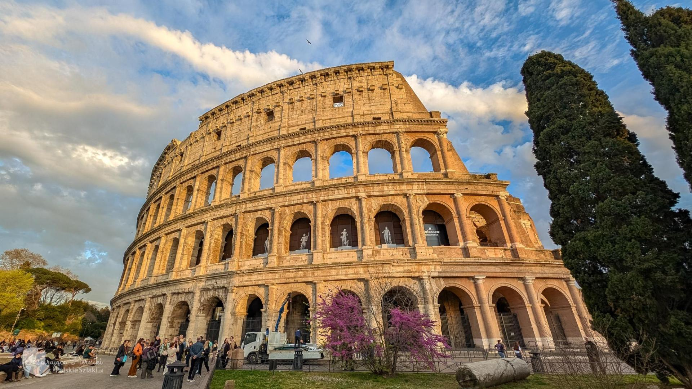

Weekend w Rzymie
Autor: Katarzyna Matejak
Opublikowano:

Do Rzymu poleciałam na krótki weekend i od pierwszej chwili czułam, że dwa dni to za mało. Wąskie uliczki, zapach świeżej kawy i starożytne ruiny na każdym kroku sprawiły, że nie mogłam oderwać wzroku od miasta. Już pierwszego wieczoru zapisałam w notatniku: Rzym wciąga od pierwszej chwili.
Zwiedzanie zaczęłam od Koloseum, a wieczór zakończyłam na placu przy Fontannie di Trevi. Następnego dnia zrobiłam sobie spokojny spacer po mieście i odpoczęłam przy porządnej porcji włoskich lodów. Podróż była wyjątkowo prosta, bo Włochy należą do Unii Europejskiej (UE), więc granicę przekroczyłam bez żadnych formalności.
Siedzę na schodach przy Fontannie di Trevi i patrzę na ludzi, którzy rzucają monety przez ramię. Nikt się nie spieszy, a ja po raz pierwszy od miesięcy też nie. Chciałabym, żeby ten wieczór trwał dłużej.
Katarzyna Matejak, Dziennik podróży
Co warto zobaczyć?
- Koloseum
- Fontanna di Trevi
- Panteon
- Piazza Venezia